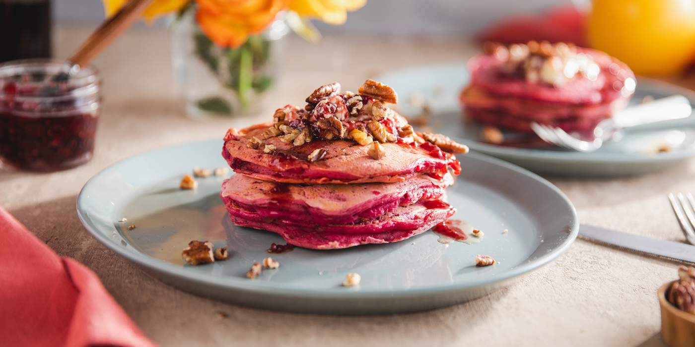

Once you eat you never order
Nothing beats a fresh-out-of-the-oven pizza, and once you see how easy it is to make for yourself, you'll never order delivery again. Switch up the toppings and add your favourites to make it your own. Pepperoni, mushrooms, bell peppers, pineapple? You can have it all! First things first, make your dough.Then, get topping. For the perfect margerita-style base, don't skip the following. When you're perusing the aisle for sauce, we say skip anything labeled "pizza sauce." Usually, that stuff ends up being too thick or cloyingly sweet (or both). Stick to marinara here, either homemade or store-bought.
To learn more 